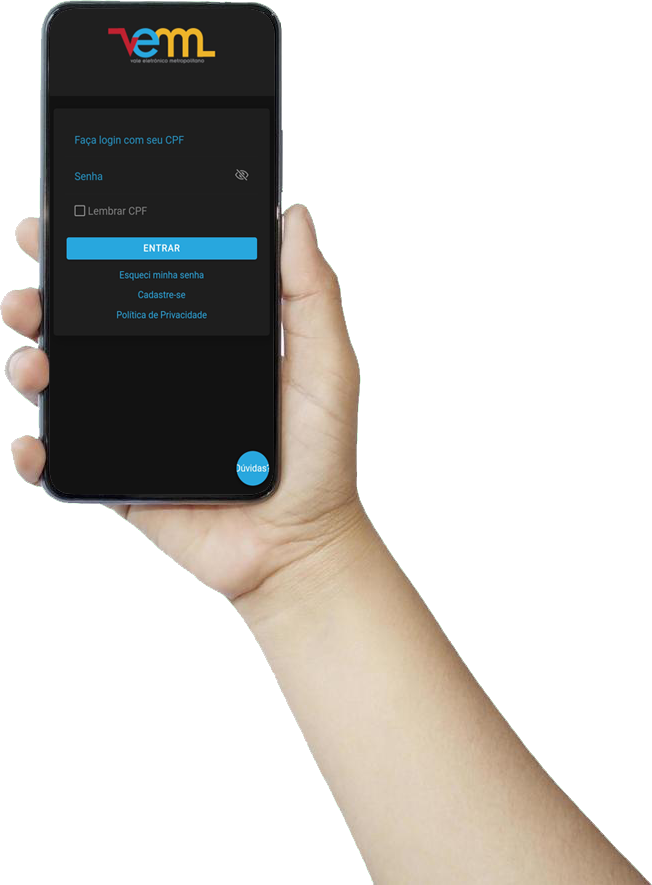

O VEM Estudante é um cartão de uso pessoal e intransferível, que substituiu o Passe Fácil. Mais moderno,
durável e de leitura mais rápida.
O VEM Estudante é direito de todo e qualquer estudante matriculado que esteja efetivamente estudando em
uma
instituição de ensino, pública ou privada, devidamente cadastrada no sistema do Grande Recife Consórcio
de
Transportes.
Para obter o VEM Estudante, faça a sua solicitação OBRIGATORIAMENTE pelo Aplicativo VEM Posto Virtual (Android). Através do serviço web: VEM Posto Virtual Ou ainda pelo serviço de WhatsApp no telefone (81) 3320-2001

Os cartões VEM Estudante podem ser recarregados nas máquinas de Autoatendimento instaladas no Posto de Atendimento do VEM: Rua das Ninfas, 278 – Boa Vista no horário da 7h às 14h, exceto feriados.
Nas estações de BRT e Terminais Integrados e nos pontos descentralizados da REDE PONTO CERTO, QIWI e Pernambuco da Sorte mais próximos de sua residência.